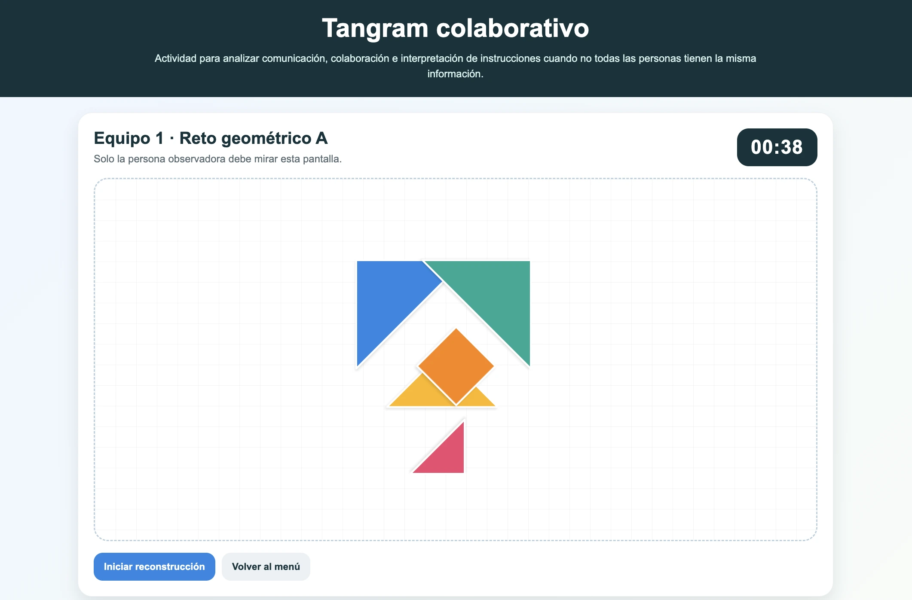

01
Formación de equipos
Se organizan equipos de cuatro a cinco participantes. Cada equipo recibe una figura geométrica que deberá reconstruirse únicamente mediante instrucciones verbales.
Actividad vivencial · Comunicación y colaboración
Una experiencia para descubrir qué ocurre cuando comunicar no significa simplemente hablar y colaborar no significa únicamente trabajar juntos.

Por qué lo diseñé
La actividad se diseñó para iniciar con una experiencia práctica antes que con conceptos. Los participantes intentan transmitir una idea compleja usando únicamente instrucciones verbales, sin mostrar, tocar ni dibujar.
La incertidumbre, la información desigual y las restricciones obligan al grupo a escuchar, interpretar, negociar significados y ajustar continuamente su manera de colaborar.
Cómo funciona
Cada momento transforma la dificultad inicial en una oportunidad para analizar qué hace posible una comunicación clara y una colaboración efectiva.
Se organizan equipos de cuatro a cinco participantes. Cada equipo recibe una figura geométrica que deberá reconstruirse únicamente mediante instrucciones verbales.
Una persona observa la figura original durante treinta segundos y después debe explicarla al resto del equipo sin tocar materiales, señalar ni mostrar el modelo.
Describe verbalmente la figura y ajusta sus instrucciones según la respuesta del equipo.
Reconstruye la figura únicamente a partir de lo que escucha e interpreta.
No se permiten preguntas de sí o no: deben escuchar, interpretar y ejecutar.
Al finalizar, los equipos analizan las dificultades enfrentadas, los acuerdos construidos, las estrategias que funcionaron y la relación entre la experiencia y las habilidades que necesitan desarrollar sus estudiantes.
Explora el recurso
El recurso se encuentra publicado en GitHub Pages y puede utilizarse directamente dentro de esta página o abrirse en una pestaña independiente.
Decisiones de diseño
La actividad se construyó para generar una tensión productiva y convertirla en una conversación sobre comunicación, escucha y colaboración.
La teoría aparece después, cuando los participantes ya tienen algo concreto que analizar.
No todas las personas saben lo mismo, lo que obliga a construir significados en conjunto.
Las restricciones evidencian la importancia de la claridad, la escucha y el ajuste constante.
La plenaria conecta lo vivido con las habilidades que necesitan desarrollar los estudiantes.
Producto esperado
La actividad no genera un producto escrito. El aprendizaje se evidencia en la participación activa, en la forma en que el equipo ajusta su comunicación y en la reflexión posterior sobre las estrategias utilizadas.
Los hallazgos de la plenaria se recuperan después en la presentación interactiva sobre colaboración, para convertir la experiencia vivida en un marco conceptual.
Lo que aprendí diseñando esta actividad
Diseñar esta experiencia confirmó que las habilidades de comunicación y colaboración se comprenden mejor cuando los participantes deben utilizarlas bajo presión, con información incompleta y frente a interpretaciones distintas.
El error no se presentó como fracaso, sino como evidencia: permitió observar cómo se construyen acuerdos, cómo se ajustan las instrucciones y qué ocurre cuando escuchar resulta tan importante como hablar.